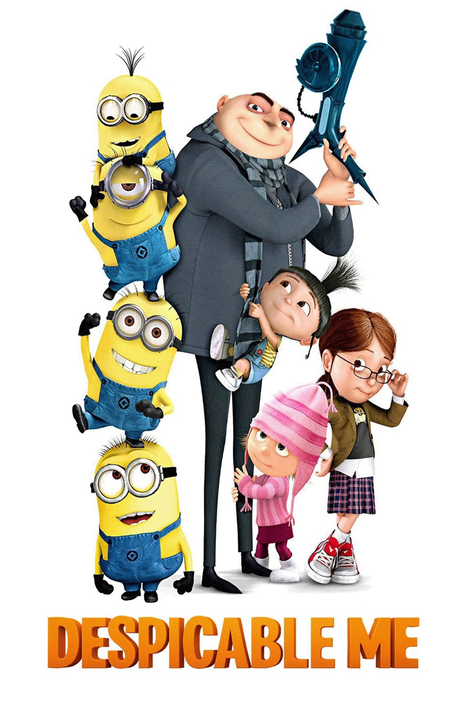
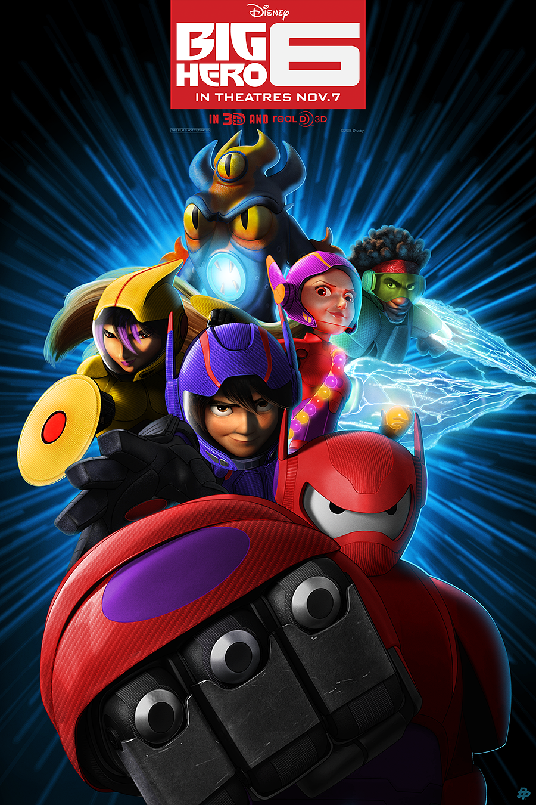
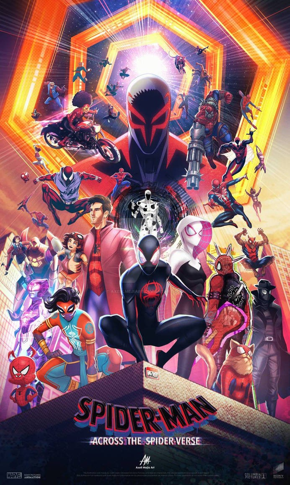
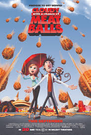

My Top Five Favorite Animated Movies
5.Robots
.jpg)
In a world of sentient robots, striving young inventor Rodney Copperbottom (Ewan McGregor) wants to work for the avuncular Bigweld (Mel Brooks), whose Bigweld Industries makes spare robot parts. But Bigweld has just been deposed as company head by the villainous Phineas T. Ratchet (Greg Kinnear), who wants to make all robots submit to profitable forced upgrades. In this animated adventure, Rodney and his friend Fender (Robin Williams) go underground to fight Ratchet's evil.
4.Despicable me 1

Despicable Me is a 2010 animated film about a supervillain named Gru who plots to steal the moon. The movie also features Gru's adoption of three orphan girls, which leads him to question his life of crime.
3.Big Hero 6

a 2014 Disney animated film about a robotics prodigy and his friends who become superheroes. The movie is set in the futuristic city of San Fransokyo, a combination of Tokyo and San Francisco.
2.Spider-Man:Across the Spider-Verse

a 2023 animated action superhero film that follows Miles Morales as he travels across the Multiverse. The film is the sequel to Spider-Man: Into the Spider-Verse (2018)
1.Cloudy with a Chance of Meatballs

a computer-animated comedy film about a quirky inventor named Flint Lockwood who accidentally creates a machine that turns water into food, causing various types of food to rain down from the sky, leading to chaos and mayhem as the town of Swallow Falls must deal with the consequences of a literal food storm